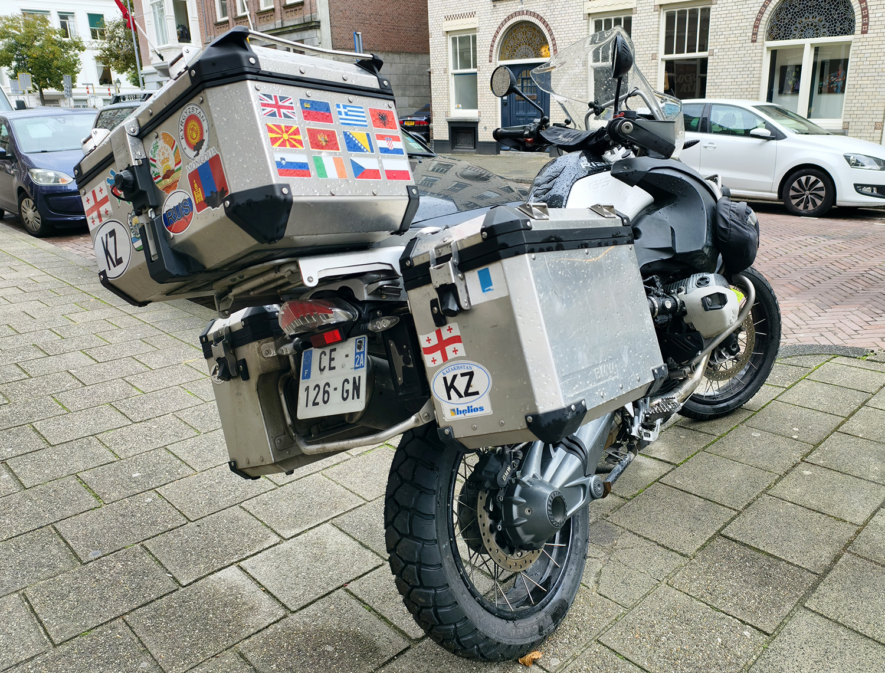
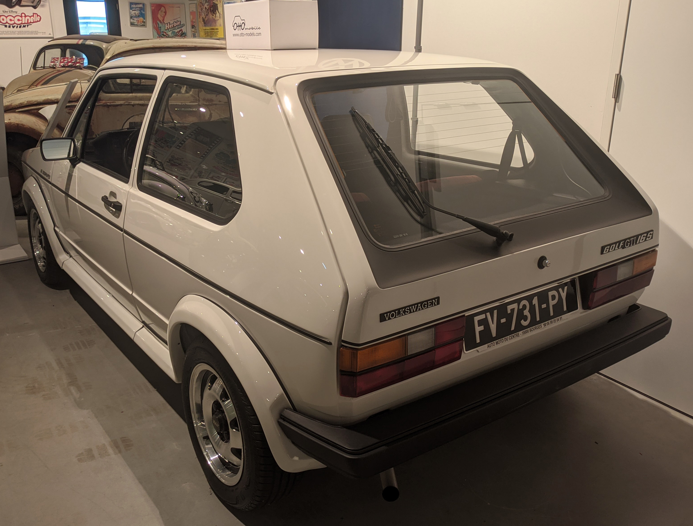
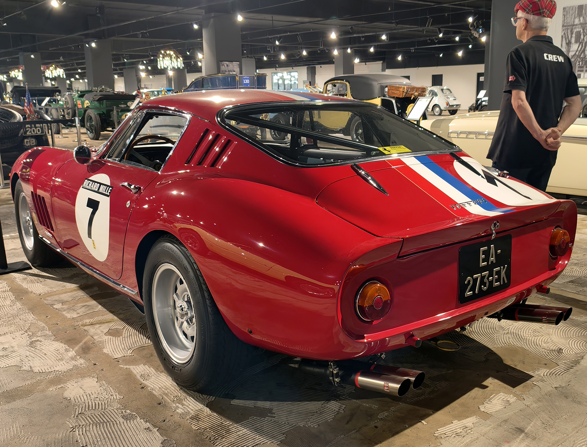

License Plates of France (FR)
Photographed in The Netherlands


Normal series since 2009. 24 = Dordogne.


Normal series since 2009. Unofficial black eurobands. 92 = Hauts-de-Seine.


Normal series. 2B = Haute-Corse. Owners are allowed to choose their region code so this car might not actually be from Haute-Corse.


Normal series since 2009. 36 = Indre.


Normal series since 2009. 974 = Réunion. Owners are allowed to choose their region code so this car might not actually be from Réunion.


Normal series since 2009. 2A = Corse-du-Sud. Owners are allowed to choose their region code so this car might not actually be from Réunion.


Normal series since 2009. Black plate = Oldtimer.


Normal series since 2009. Black plate = Oldtimer.


Normal from 1950 to 2009. 92 = Hauts-de-Seine. White front plates mandatory since 1993. Euroband optional since 1993 and mandatory since 2004.


Normal from 1950 to 2009. 51 = Marne. White front plates mandatory since 1993. Euroband optional since 1993 and mandatory since 2004.